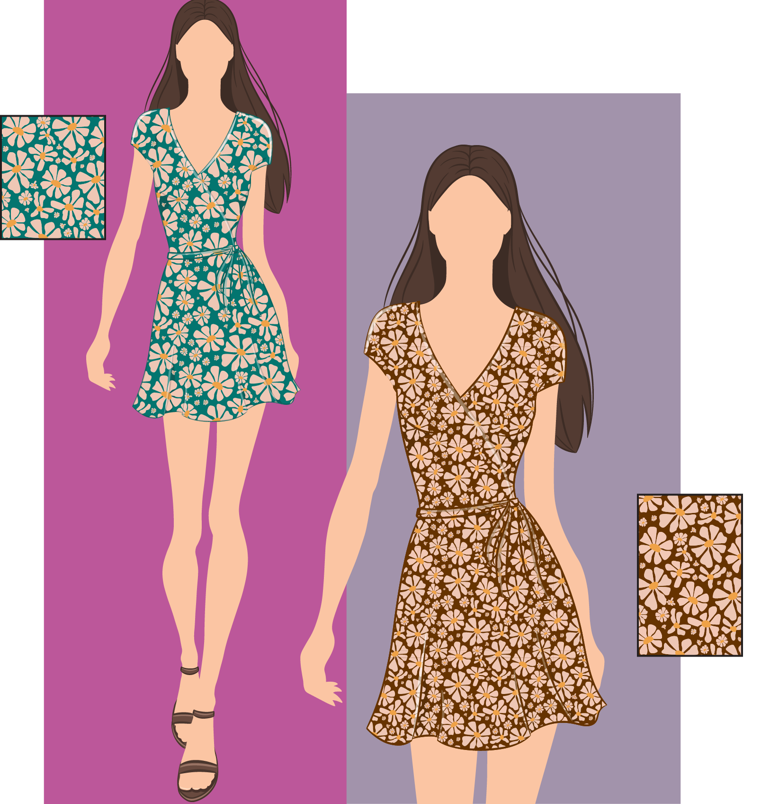
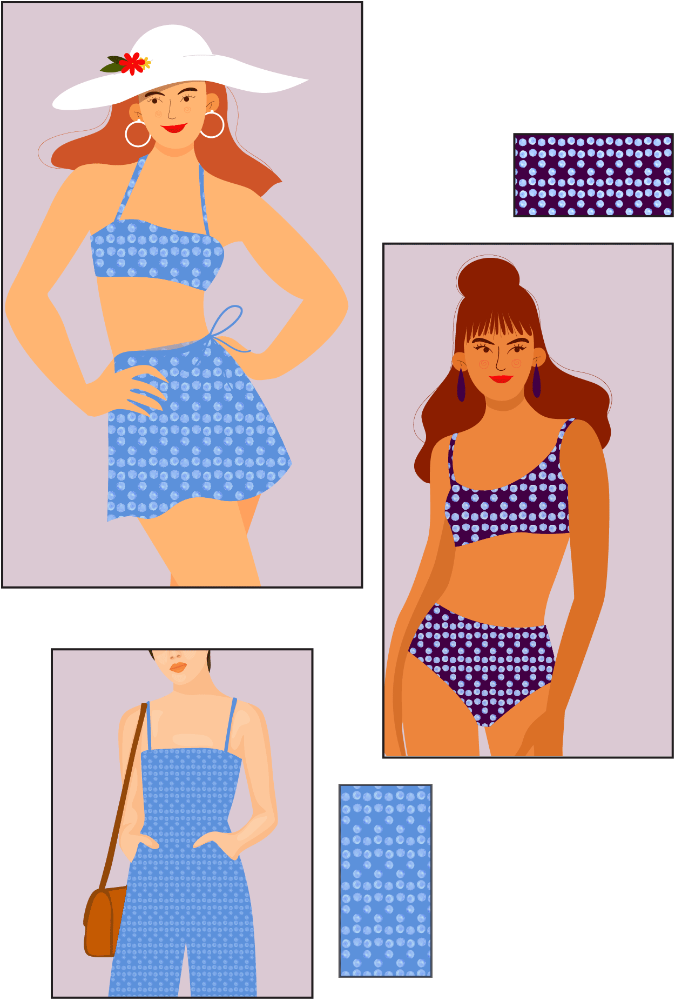

Projects
02 uOttawa – Motion Graphics
03 Makenda Fitness – Brand Identity
04 Asuquomo – Visual Design
05 Amazon Café – Creative Direction
Surface Pattern Design
Inspired by the tangible world, these surface pattern designs showcase the interplay between traditional artistry and modern digital techniques.

[1] 70s Dream Bloom: Wallpaper application.

[2] 70s Dream Bloom: Digital pattern swatch and accessories application.
[3] 70s Dream Bloom: Bedding application.
[4] 70s Dream Bloom: Womenswear.
[5] Handmade prototype featuring hand-dyed canvas and with a lined interior.

[6] Drops of Summer: Watercolour pattern design for swim wear and beach accessories.
[7] Drops of Summer: Pattern swatch and beach accessories application.
[8] Drops of Summer: Womenswear.
© COPYRIGHT JENNIFER YAYA FALANGA 2025